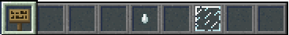
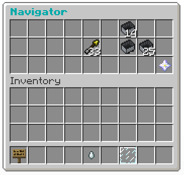
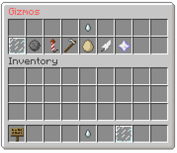
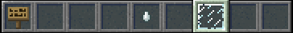
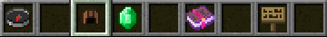
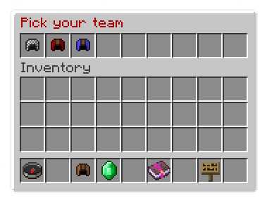
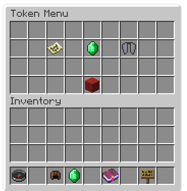
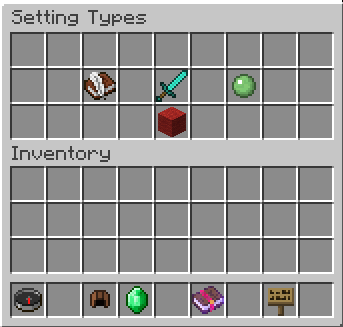
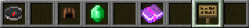

Welcome!
Hello and welcome to the Stratus Network! We are very glad you found us!. The Stratus Network is a PvP based server run on the PGM plugin. The server provides unique, dynamic maps and gamemodes created by the dedicated members of our awesome community.
Lobby Menu
When you join the server you'll be in lobby. Your hotbar will contain a selection of items that each serve a special purpose when clicked.

The first item in your hotbar is the navigation bar. This will allow you to teleport to all the available servers.

This is the server selection screen. It also shows how many people are currently online in each server. Simply click on any server and you'll be teleported there.

The second item is the gizmo menu. Gizmos can be purchase with droplets, which can customize your experience in the lobby.

These are all the available gizmos. You can check your total amount of droplets by hovering over the ghast tear.

If you have enough droplets, you can purchase a gizmo by clicking it. You will be directed to the shop menu, where you'll have to confirm your purchase. Click the diamonds for yes, and the redstone blocks for no.

The final item in your hotbar is your current equipped gizmo holder. It will be a glass pane unless you equip a gizmo, which can be done be selecting a purchased gizmo in the gizmo menu. When a gizmo resides in this place, you can use it. Most gizmos work by clicking another player, but feel free to explore all the possible abilities yourself!
Selection Menu
Once you select a server to join, there will once again be a bunch of item in your hotbar. Some of these items serve similar purposes as the ones in the lobby, but there's a bunch of new ones as well.

The first item is the World Edit compass. This compass will allow you to teleport throughout the map as long as you are in observer mode. If you left click you'll teleport to the block that you are looking at, and if you right click you'll pass through the block.

The second item is team selector. Clicking this opens a menu that allows you to join the match, either by assigning you a random team or allows you to choose your own team. Keep in mind that choosing teams and joining full teams is only to available players with a premium rank, which can be purchased in the Stratus shop. You can also join the match by typing /join. You can return to observer mode at any time in the match by typing /obs. This will take you out of the match. If you do decide that you want to continue playing, retype /join, and you will be sent back to spawn with a default kit.

Once open, the inventory will display a selection menu. The chainmail helmet will put you onto the team with the fewest players. If you have a legacy rank, you can choose which team you wish to join by clicking on one of the leather helmets.

The third item is the tutorial emerald. Not all maps have this option, however the ones that do are a great place for beginners to start. This item will take you through a custom tutorial about the map. All tutorials are unique to the map you are currently playing, so if you have not played the map before, it is highly recommended that you view it. The tutorial itself will send you to specific locations through the map with information in the chat box. Left click the emerald to go to the next location, and right click to return to the previous one. You can always leave the match to view the tutorial if you are confused on what you must do.

The fourth item is the main menu. Under the menu, you have access to the token menu, your in-game statistics, and some settings.

Tokens are special items that allow you to set a poll for a map or for a mutation to be played in the next match. Tokens can be purchased in the Stratus shop or bought using droplets. Tokens can also be obtained by purchasing a legacy rank. There is also a chance of receiving a SetNext or Mutation token at the end of every match. You will be alerted in chat if you are a lucky recipient. Those on the winning team, and the MVP, will automatically have a higher chance of receiving a token.

Upon clicking on the token icon, you are taken to this screen. Here, you can select a SetNext or Mutation token. SetNext tokens will allow you to set a poll for the next map, and if the poll succeeds, the map will be played and the token consumed. The mutation poll functions in the same way, but will set a mutation for the next match instead. The emerald icon in the center will take you to the token shop. You can go back to the previous screen by clicking on the red wool.

This is the token shop where you can buy one, three, or five of either SetNext or Mutation tokens, consuming droplets. The ghast tear icon shows how many droplets you have, and the emerald displays the Stratus Shop link.

You can also configure your settings under the main menu. These fall under three categories; Chat, Gameplay, and Miscellaneous. This is very similar to the /toggle command, yet much more organized and appealing to the eyes. Be sure to check this out, it'll give you a unique, personalized experience!

The fifth and final icon is the navigation bar. This has the same functions as the one found in the lobby; it shows all the available servers plus the lobby, and allows you to teleport whichever you desire.
Last modification: unknown